goodalexander
goodalexanderOne Last Midnight Opting Out of a Raw Deal: Long Coins Short Stocks
Cryptocurrency is running higher. Stocks are stalling.
Cryptocurrency is running higher. Stocks are stalling. I think it's time for the big run in coins vs equities and the crypto market now has the infra to put it on. This is an initial piece to get grounded in the market in front of us. Later pieces will be more focused on single names with better DD
TLDR:
- I am bullish on Bitcoin. The market tried to kill Saylor and failed. Shrugging off quantum headlines and going higher. Hash power holding up despite multiple proof of work competitors (ZEC, PRL). The deficit dynamics that make a fixed supply coin valuable are moving in the right direction
- I like exchanges more than Fee L1s (am long BNB and HYPE). Layer 1s are getting mogged by exchanges in terms of fees and stablecoin growth is not moving fast enough to be excited about ETH or SOL. HYPE is maintaining share. LIT not growing fast enough. BNB is the dominant CEX.
- Privacy and Quantum resistance are obvious winners. XMR, ZEC NEAR, spot (in that order) as they're more exempt from regulatory impact and benefit from store of value narrative that should pick up
- Suitcoins and US Regulatory Trades are in the doghouse until something changes: XRP, COIN, CRCL. Regulatory disappointment.
- If Republicans keep the Senate and Warren isn't a banking chair who spends the next 2 years probing Trump - should be good for a squeeze higher on Trump crypto complex (WLFI etc). This is not base case but could be a huge intraday trade
- Pearl (multi $B FDV proof of work AI Coin) hitting CEX-es will be a liquidity suck on TAO, bc Venice is doing enough inference traffic to keep a bid but I've lightened up shorts as I just want to be net long coins and short stocks
- Tom Lee isn't buying ETH anymore, stablecoin volume is flatlined, SOL fees aren't high enough. Hard to own either ETH or SOL
The New GoodAlexander Thesis
Long Coins. Short Stocks. We're at an inflection point where coins are finally starting to beat stocks, alts are beating BTC and you can short stocks on TradeXYZ and get paid mid teens yield to do so. My high order thesis is that society doesn't actually like what it's become and the Democrat sweep will remind everyone of that. Every piece of content is an almost pathetic cry for help. A 3 hour podcast about grayscaling your phone with 3 million views. The most engaging tweets are bullish coins, and bearish equities. Ed Zitron is a clown but he gets huge amounts of attention. Not because he's right but because deep down, people hate the K shaped society and want it to burn to the ground before we reach RSI. As retail trading and hyper speculation become the incremental dollar for 'price discovery in markets - clicks rule everything around me. And clicks demand bullish coin posts and bearish equity posts.
This self destructive penchant has started to bleed into the charts as you can see below, which is why I am beginning to post a lot more actively
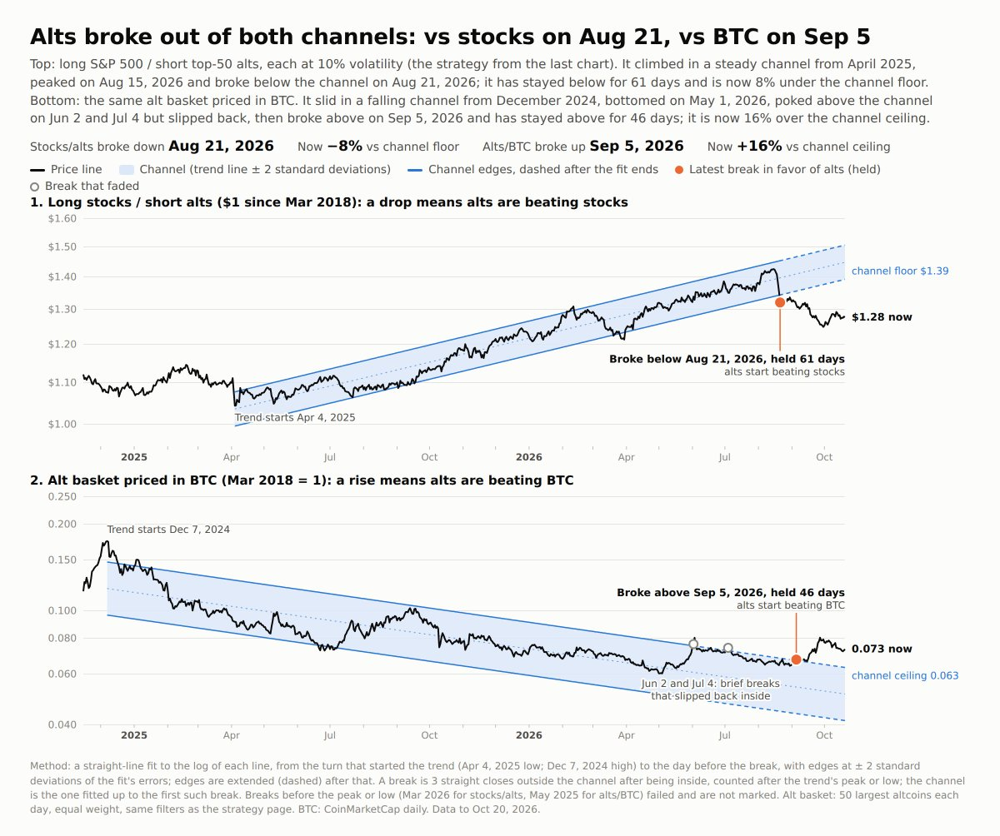
- Darwinian AI evolution. All the FUD in crypto (Defi hacks, quantum exploits) are forcing massive action by crypto protocols in the here and now whereas banks are on legacy remediation plans and can barely manage their own AML programs (see BoFA). Cyber security companies are saying that post Mythos deployment the number of exploits drops exponentially bc essentially code can become perfect at some point. So we are currently going through a Darwinian moment that forces crypto teams to adapt first to all the acceleration in the economy. So crypto takes the pain first, that will later hit the rest of the economy
- AI progress doesn't mean stocks work and we have a real time example. China is neck and neck with the US in AI but its stock market index is collapsing along with its economy (Chinese tech -43% over 5 years). There isn't an obvious economic benefit to AI without an unproven RSI claim. And there are economic disruptions as moats decline. If you have a protectionist / or heavily regulatory environment which is what the AI labs are begging for right now and Democrats would be happy to provide in 2028- you have a base case of imploding valuations. California talking about wealth taxes
- Sentiment is at the lows, price is going up, and inflation is behind us. NEAR is the poster child for absorbing hundreds of millions of VC unlocks. ZEC shows a team that's willing to grind for a decade + and continue shipping useful tech. The "founders sell and peace out" story is very much not true. And annual inflation on the top crypto 100 is sub 2% - lower than the US CPI, with stocks the most dilutive and capital intensive they've been in years. Token2049 was subdued. Not manic like the last 2 years. So climbing price and bad morale. Bullish
- When a market makes a play at a leveraged player and fails it tells you something. The market very nearly killed Saylor. Smart people full ported MSTR and STRC shorts and got wiped out. STRC is back at 100. This is an 'inverse 10/10' event where it shows bears that there are better fields to play than trying to attack crypto
- Clear transition into the settlement layer of global banking and equity rails. We see it everywhere. Bank wire transfers via QNT. CFTC/ SEC pushing tokenized equities. Trade XyZ with real stock and commodity perps. Tether gold quietly hoovering up billions, serving as collateral for perp trading. This is the higher quality collateral that crypto was always missing. And more importantly, per this content allows me to p
Q1: What's going on with the majors - BTC, ETH? Should we be worried about Saylor reflexivity?
Simply, Bitcoin looks Good. ETH does not look as good. I think the story is exchanges earn the fees. Bitcoin is Scarce. The things in between lose.
The biggest quantitative story in the majors is BTC mining difficulty which is shaping up positively. One of the fears was that BTC was losing share in proof of work due to Z Cash and it's good to see this bouncing.
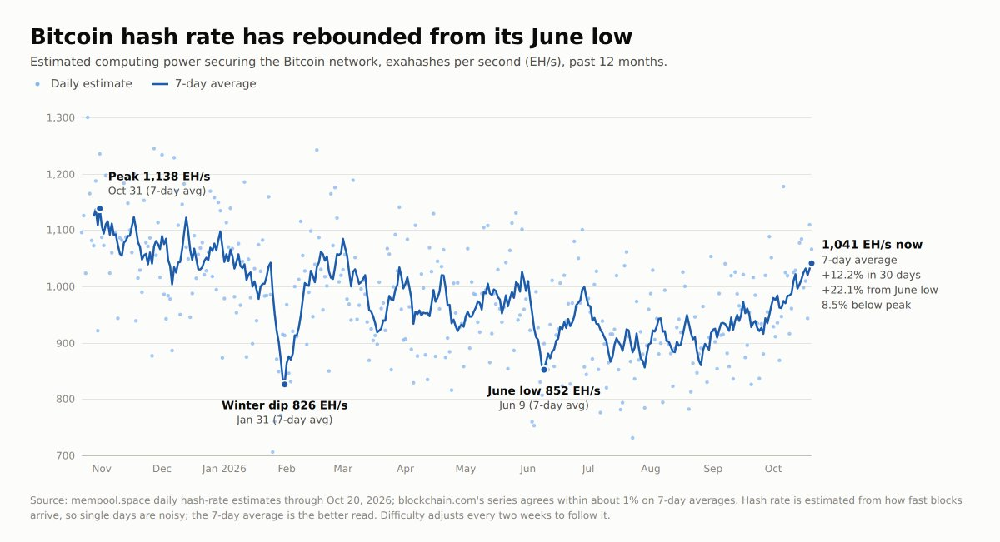
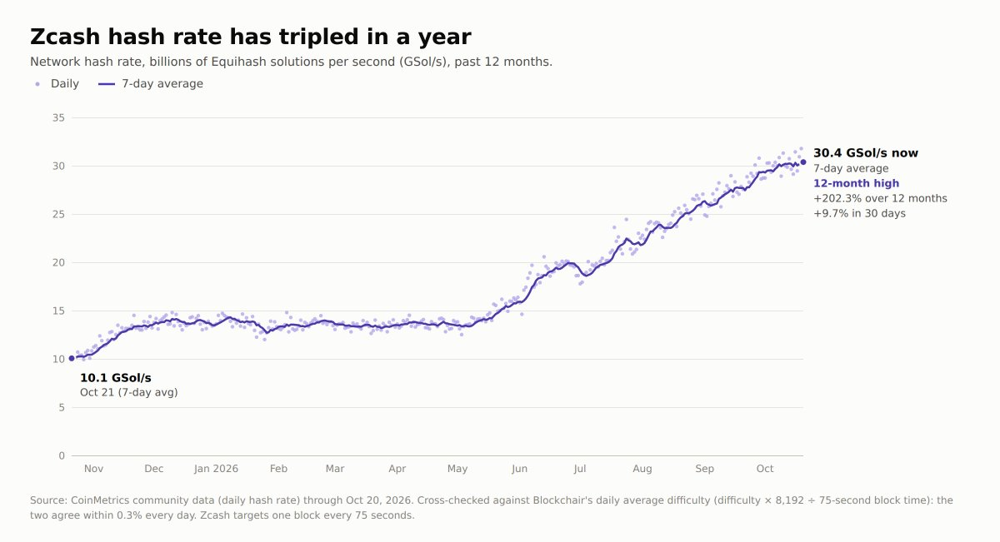
It's also good to see Saylor's debt trading well. STRC is back at $99 from a low of $74. The market came for the king and missed
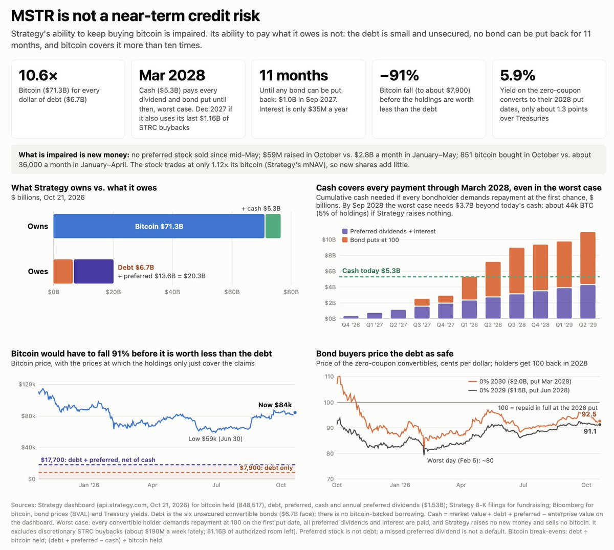
It's good to see Bitcoin IBIT shares outstanding back at all-time highs. Given its enormous fee capture for Blackrock expect continuous positive Bitcoin marketing.
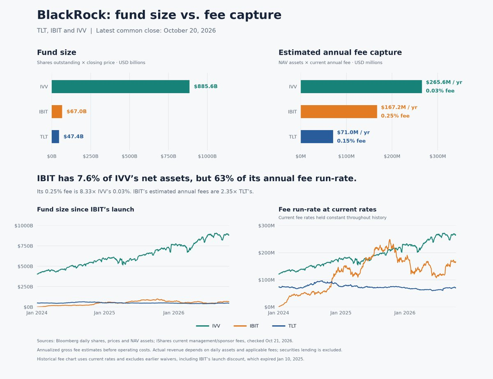
Meanwhile the US fiscal situation is out of control with no signs of slowing down with Wars, Trump talking about $5k checks for Midterms and ballooning interest payments
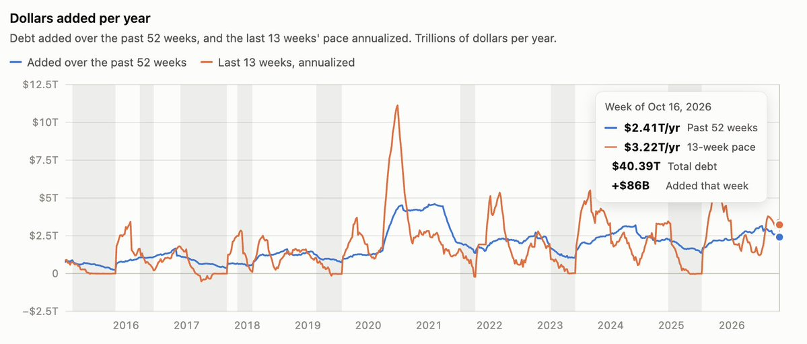
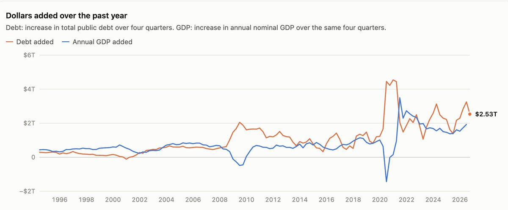
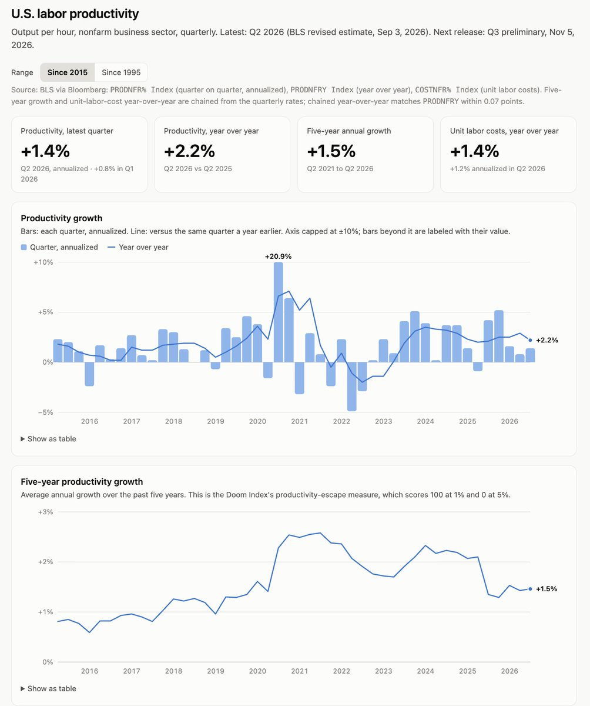
Given macro concerns in Iran, and increasingly unsustainable looking deficits in the US - there's more and more discussion of alternate mechanisms. Judy Shelton is now (as of Oct 9) a Counselor in the office of the treasury.
Zoltan Posnar recently wrote a piece highlighting a G20 leaders summit in Dec 14-15 in Miami for a new Bretton Woods accord. Shelton has proposed relinking long dated treasuries to Gold which would be a big catalyst for gold reserves and the story of the US being unable to finance deficits
The quantum concern on BTC is real and extreme outperformance of NEAR and ZEC (my own project @postfiatorg is quantum resistant from genesis). Blackrock notes in the original S1 that there is a risk that quantum computing could render the network ineffective. The slow moving Bitcoin Dev team has to execute by 2029. The next quantum catalysts are Anthropic's IPO roadshow where they'll talk about cracking cryptography as an AI safety risk and IBM's November quantum conference where they'll talk about a quantum chip that likely hits in 2029.
The above post is the most relevant evidence Anthropic is going to bring this up on their roadshow. They said this work was done in a single 53 hour job. So Quantum research is accelerating, moving windows shorter and it will be brought up into a $2T IPO in the next 2 weeks. Still - to run a proper attack you need 1000+ qubits. Right now Google Willow has 105 qubits (1000x short of what's needed) - and I imagine if asked directly by analysts on the roadshow, "is this a near term risk to BTC" Anthropic will say "No. But it will be." which is enough to justify diversifying into non BTC alts
Google Deepmind also published in Science last week that a key shortcut in its Bitcoin cracking estimate actually works. This means that the 2030 timeline is real, and problematic and not FUD but it doesn't pose imminent risk.
Regardless of the quantum fud, Bitcoin is a big liquid asset that is a response to fiscal mismanagement. It's in an uptrend. It's withstood a test. I think it's going back up
I constantly want to be an ETH bull but transaction volume is inflecting negatively and annualized supply growth is ticking upwards
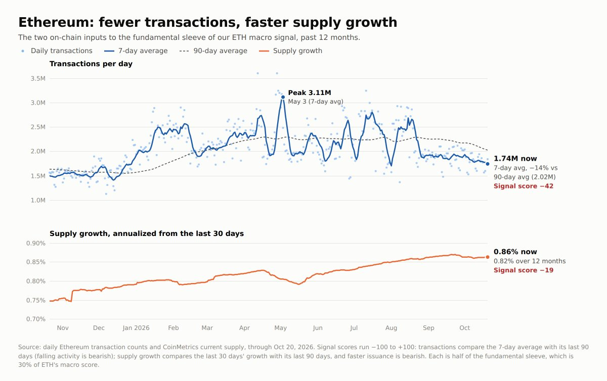
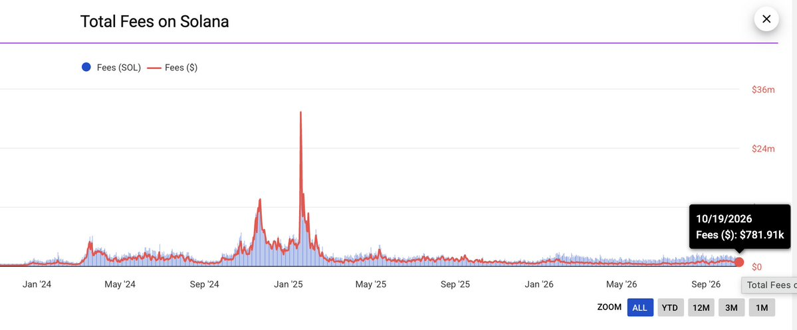
Similarly, to get excited about ETH, TRX, SOL or chains clearing large amounts of stable volume you'd need to see the green line (USDC+USDT) moving up definitively. This is *not the case right now*
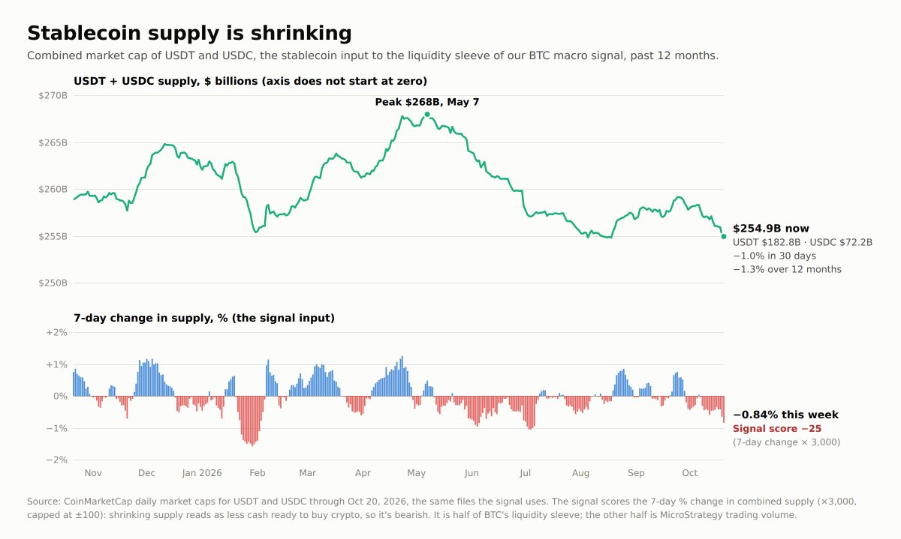
Circle Stablecoin supply per coinmarketcap ex growth year over year
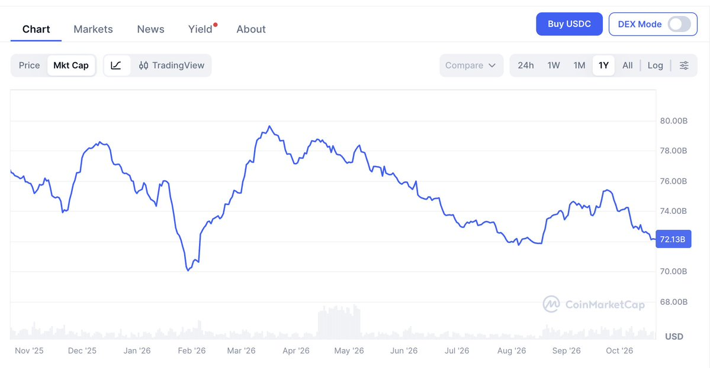
This is likely in the backdrop of near term regulatory tailwinds from the SEC and CFTC but into a likely blue wave in Midterm elections, markets see sub 30% odds the Clarity Act gets passed by 2028
On top of the regulatory uncertainty, Tom Lee is more or less done with his 5% of ETH target. At Token 2049 he said “We wanted to get to 5% of the supply. That’s a hard cap. We’re not going to be accumulating past 5%. “We have a 5% hard cap. We’re not going to own more than 5% of Ethereum.”
This is obviously pretty bearish because he was one of the largest single sources of buy pressure on ETH.
Q2: In Alts, what is running and why?
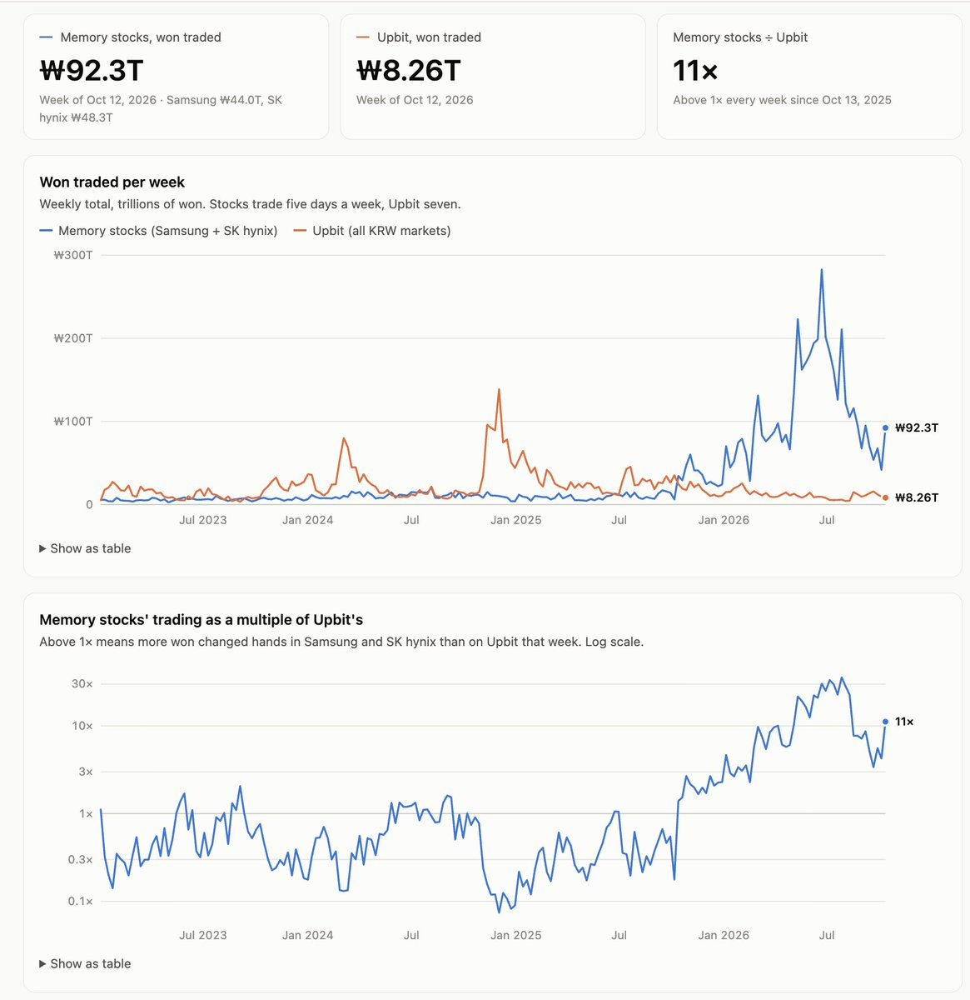
We are still in the "AI liquidity suck" environment, especially in Korea where Memory stocks went from zero to hero. At the start of the year Memory and Upbit volumes were about equal and now Memory stock volumes are about 11x higher. This is down from the peak of 30x but still not ideal.
The plus side is that dumping from teams is slowing down. So that if the buyers *do show up* then we can go much more vertical than previous high inflation eras where you were absorbing VC selling, unlocks, team sales etc. Furthermore - now that memory stocks are slowing down (-20% in past month) - it's no longer a 1 way train and some attention can flow into crypto.
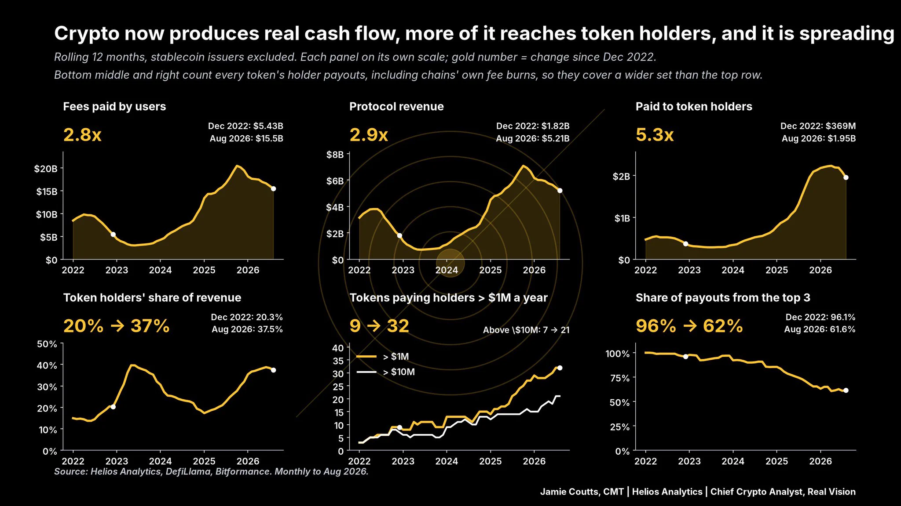
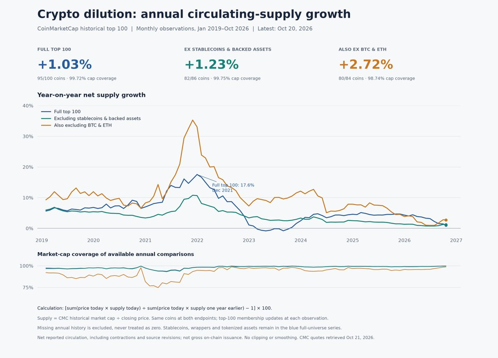
In the meanwhile the equity market is the most dilutive it's been in years, is adding leverage at the fastest pace into the worst rates it has in years, and also the most expensive it's been.
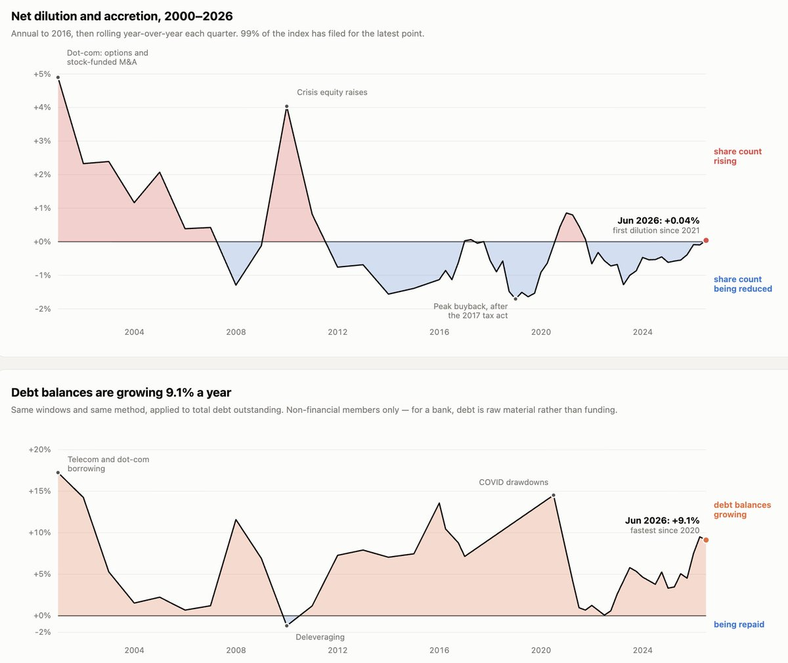
So what's actually been working in Alts. It's a motley assortment roughly split between RWA/On-Chain Stock Narrative Coins (ZRO,ENA,ARB, PYTH) , Fee Coins (PUMP, RAY) Privacy + Quantum Resistance, and AI (WLD, VVV). You don't see DOGE, PEPE or memes here. It's all serious business. The extreme outperformance of NEAR is something I highlighted before - as it's a coin that absorbed $100s of millions of Venture capital exits and has continued to trade well - contradicting the previous altcoin story of "VCs sell and it goes to zero every time". The exception to "serious business" is US exposed crypto is not trading well .
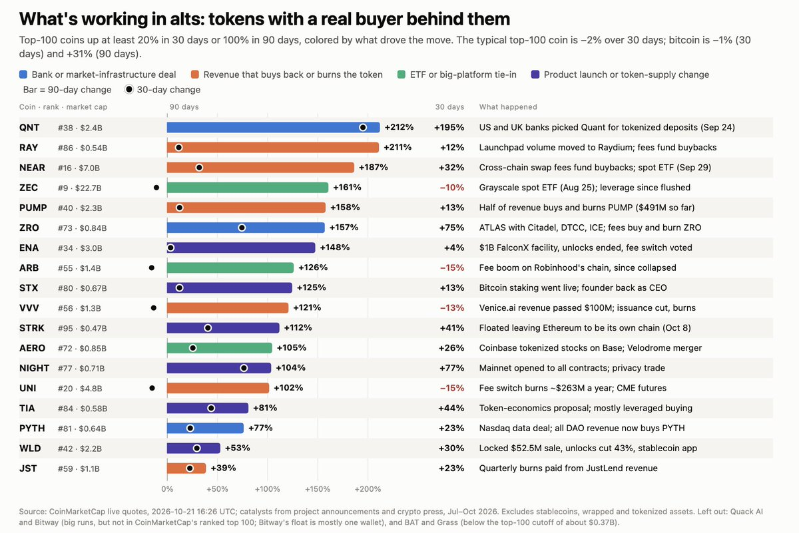
What on earth is QNT?
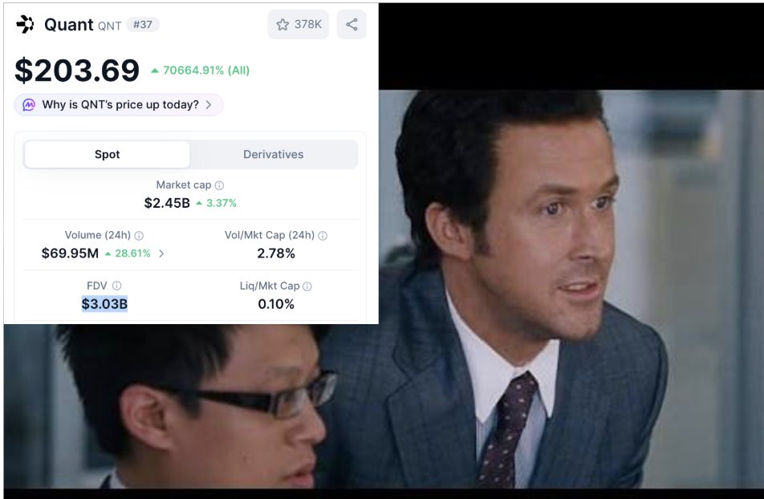
Like many of you I had not ever heard of QNT. On September 24 the Clearing House, which is owned by the biggest US Banks (JPM, BoFa, Citi, Wells etc) chose Quant to run its tokenized deposit plumbing. The Clearing House controls CHIPS (bank to bank wires, trillions a day). And RTP. Instant payments.
If each bank builds its own tokenization solution interbank interoperability becomes a nightmare. So Quant was hired to write the software to deal with this. This software:
- routes payments from one bank's system to anothers
- checks and records it
- connects to the old systems
Like many altcoins there is obviously a problem here that the QNT development team might simply not choose to pay these fees to tokenholders at all and the bar is high to do so at a $2.5 B FDV. More relevant: this is yet another example of Ripple and XRP failing to win the banking narrative as the Clearinghouse called Quant one of the only teams that could actually build banking relevant infra. RippleUSD is also flat month on month in terms of its growth, a large decel (I'm not short XRP, but can't justify owning it right now).
There are a number of not so bullish points such that I don't want to chase:
- Paying in QNT is optional
- 2020 tokenomics is now gone - and contracts archived that sends fees to the coin
- The new network doesn't obviously use QNT yet
- Even with max flow through $50m a year is not a lot of fees relative to $3b cap
- I also don't want to short it bc I know how high bank meme coins can run. I would probably buy it if Clarity had passed but that didn't happen
- If you combine this with the lack of regulatory Clarity, and Blue Wave it puts the suitcoins in a much worse place
Why is NEAR pumping so hard ?
NEAR has capitalized on a successful swap product, privacy, and quantum resistance narratives as well as the rumored end of investor sales.
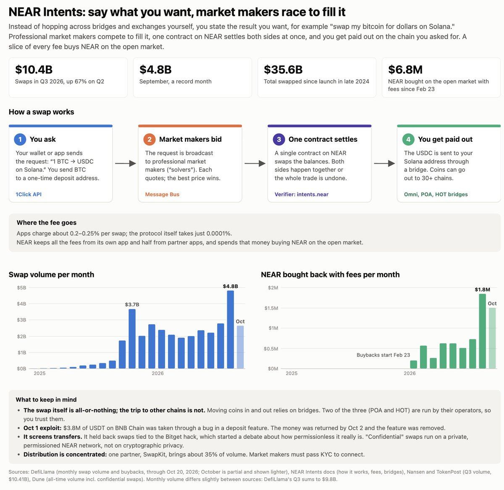
- NEAR has a fast growing swap platform called Near Intents
- It's a pretty sick product - 16 bps for a no KYC cross chain swap.
- Market makers fill trustlessly on a back end designed by NEAR
- Volume growth has decelerated a bit in October as there were some issues around the team controlling the swap / TEE that makes it possible. Think the coin is a strong long if monthly swap volume clears back above $5b but right now I think is small
What is up with ZEC
Other than the hash power going up monotonically ZEC survived a major shielded pool issue and has since seen the migration go very positively into the new Ironwood pool (migration from Orchard). What could have been an existential event was averted, responded to and showed the team's technical competence under fire
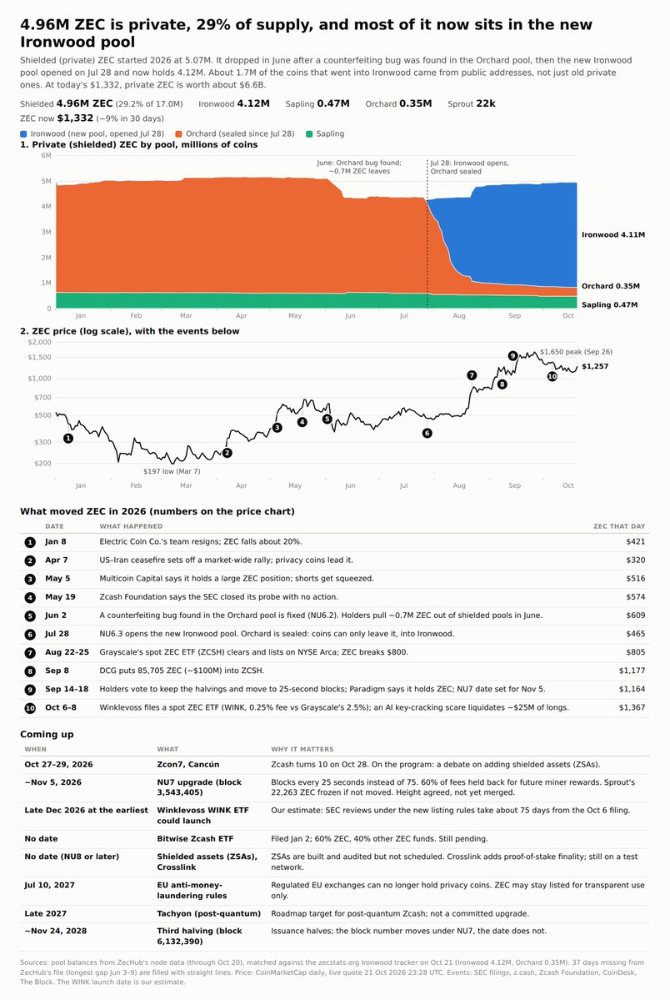
On a go forward basis - shielded assets are the obvious big catalyst for ZEC as right now, just privacy on the base asset is less appealing than potentially being able to move around other assets.
Z Cash is not yet fully quantum resistant. Addresses currently authorize spend with elliptic curves. A quantum computer or math breakthrough could forge spends. There is a quantum recoverability protocol in Ironwood that basically lets owners later prove ownership with ahsh based math which is quantum resistant. In January we should see post quantum hash based signatures for transparent payments per Zakura (Z Cash node operator).
The Tachyon update led by Sean Bowe could ship by Late 2027 (Coindesk called this a 'committed path' but there is no guarantee it ships by then). It entails adding NIST quantum standards into key exchange. And then moves funds in to a new pool with hash based signatures.
I think ZEC is worth owning. I have a larger XMR position. Will write that up in a separate article
Q3: What is the commentary from crypto related companies on recent mgmt meetings / earnings calls?
The primary trends you are seeing from companies management:
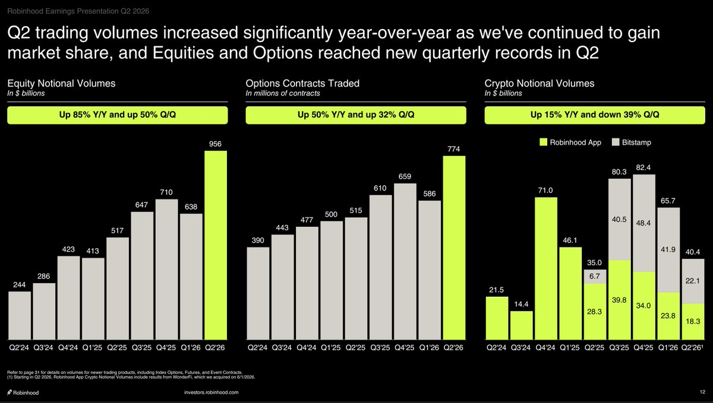
- Simply put Crypto management is flopping between "pivoting out of crypto into AI" (often, literally data centers) and hoping for revenue diversification from gambling products that everyone else is launching. Publicly traded crypto stocks are a waste of time, sound like crap, pivoted into heavy AI investments at the top of the cycle, and are not worth owning imo.
- in stocks - crypto companies are no longer crypto companies. Their products are now bundled along with equities, derivatives, prediction markets, sports betting, cash products, data center operations and wallets. As such -- if there's a downturn in equity trading or AI credit which I think is possible, they'll get hit.
- From a UX perspective I increasingly think nobody cares if what you're trading is an equity, a Layer 1, a prediction market, a sports bet, an NFT, or a pokemon card. People are just gambling and care about liquidity and volatility
- Saylor described sentiment as "near a cycle low" with Coinbase saying that risk appetite has been structurally impaired since last year's 10/10 implosion
- Coinbase "bitcoin spot trading now contributes just over 10% of revenue vs 50% when it went public" while prediction markets just hit $100m ARR within months
- Total stablecoin supply isn't a perfect analogue for stablecoin growth. Coinbase and Circle are saying that transaction velocity is way up, so the same dollars. At the same time Coinbase noted that Agent to Agent crypto transactions while growing were "not financially material"
- Per Visa USDC has 70% marketshare in actual stablecoin transaction usage though it lags tether supply by a large amount and USDT
- A decent % of crypto (such as HUT8, GLXY) pivoted into AI datacenter work. Galaxy is doing 133 MW of capacity at Helios while Hut 8 is doing 949 MW of contracted AI capacity. Increasingly these are just fully AI specific development vs converted Bitcoin mine's
Q4: What is the impact of a Blue Wave?
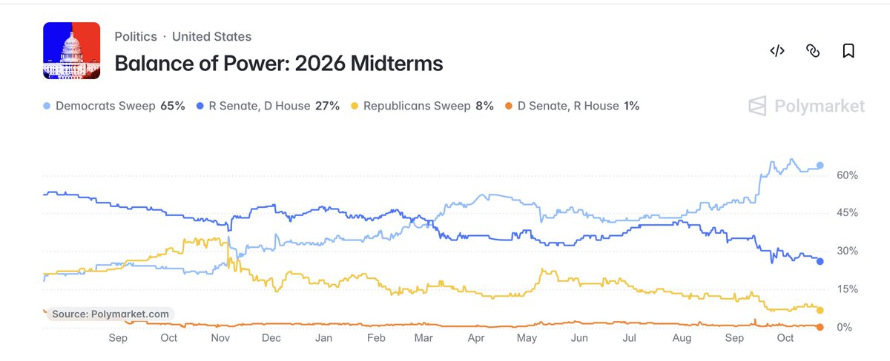
The Blue Wave is bad for "US Banking Hub" coins/ stocks. CRCL, COIN, XRP, HBAR and Trump adjacent coins WLFI.
The Clarity Act would die. Elizabeth Warren likely runs the banking committee and kicks off optically ugly investigations into Trump family crypto holdings and the Binance pardon. These can't really go anywhere while Trump is in power, but it gets ugly in 2029 and shapes institutional crypto investment plans. Genius Act stays in place and kicks in Jan of 2027
There's not near term risk to IBIT or the crypto industry until Trump is out of office because he'd veto anything super unfriendly
Q4: Who is winning in the exchange wars: hyperliquid, lighter, Robinhood chain?
Despite lots of hubbub about HYPE competitors, Hyperliquid is dominating DEX volumes (data pulled straight from exchange APIs)
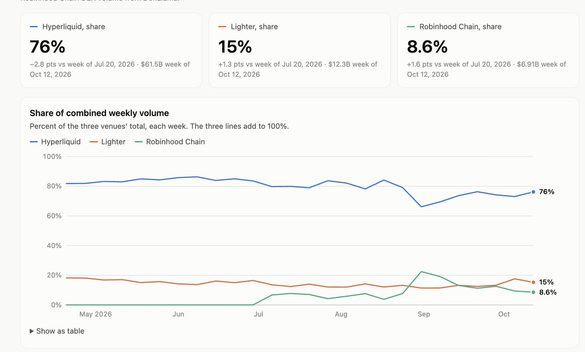
Per the chart below HYPE evaporates about $113m a month of its users money. On one hand, this is terrifying (and CEXes are no better - with typical account losing full value w in 30 days). On the flip side - let's say Luxury spend at LVMH is about $90B a year - and nobody really needs LVMH products but for the sake of argument let's say 50% is pure economic spend. $45B. $1B of trading losses a year look rather small compared to the TAM of buying your bird nice things or even the paper wealth generated by HYPE token over the last year (about $40B of FDV). Robinhood has about 3-5x the likely loss rate - so not early by any stretch but as long as there is money on the high end of the economy these numbers can go up
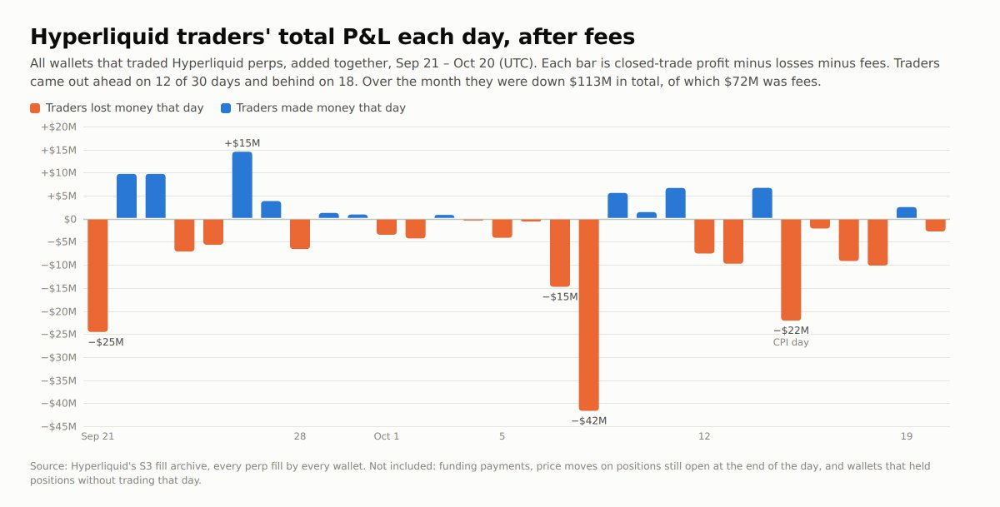
Things get substantially nastier if the economy decelerates, and the paper gains subside. But that isn't the here and now. Binance is the dominant CEX and I'm a bit afraid of Elizabeth Warren delving into Trump's CZ pardon otherwise I'd have a much larger BNB position.
My take on CZ is that he's pissed off about Aster failing. The team didn't execute - but he's not going to let Hyperliquid walk off with the crown. And he's not done with crypto. He's routinely tweeting about wallet security (not something you do if retired), Binance's burn and the market. Binance US is recapitalizing with a $100m round as of October 15. I'd predict that he gets back involved in a big way - including in the dex market.
HYPE and BNB are therefore core longs - and will be preferable to expensive L1s (ETH, SOL) for the forseeable future without changes in network traffic
Q5: Is World(coin) ever going to benefit from this AI safety meme?
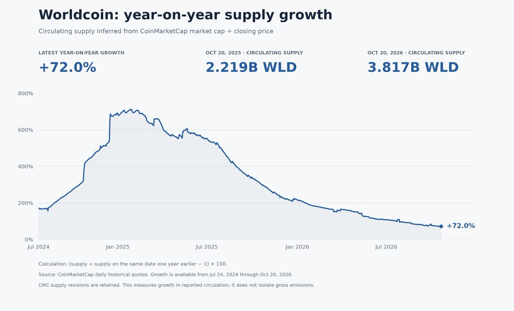
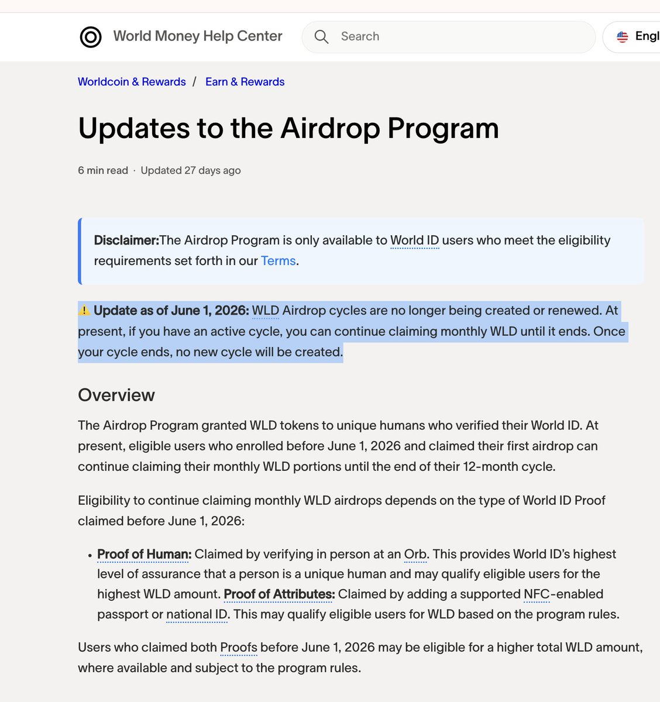
WorldCoin is winding down its disastrously inflationary airdrop program which has added to sentiment.
WorldCoin remains my largest ever crypto loss, having held it from $9.5 to $1 after having bought in at $2. So. A bit of PTSD (this probably means it works hah).
Investors are long WLD into a rumored event with Blania and Altman where they will discuss Worldcoin integration with OpenAI products. I thought Sam Altman's last interview was terrible. I was hoping on a nice inference update given concerning numbers in data tracking. Instead he's focused on Chip Development, drug discovery that could 'take years' and pointed to a "rapidly accelerating competitive environment". He's also betting the ranch on hardware while in an active lawsuit with Apple and losing share to Muse. Just high risk game. I already have enough OpenAI beta with my Coreweave debt and oracle longs so I've decided I don't want more
Q6: What about crypto AI?
This post has gone too long so I think I'll save this for a separate post. But I do want to highlight:
I am excited about CHIP still and have a position there. My thesis in a nutshell:
- I think 2027 CHIP buybacks will be higher than Venice 2027 buybacks (can bookmark this and check in end of Q1 and see if I'm right). CHIP has a fraction of the FDV
- David pissing farmers off to keep token price up is actually bullish (dev cares about price, does not tweet about it). I was worried in the bear market trad venture investors would convince him to do structuring that was bad for the token and that didn't happen
- 9%ish coreweave DDLT5.5 loans don't move the needle for credit funds who need mid teens yield to comply with their mandates. USD AI is the only player that can do asset backed loan in this yield range. The alternative is buying debt in coreweave parent (which I admittedly own) but has less credit protection. Especially after the DeepInfer launch which anchors people on the value of collateral - this is going to be a feeding frenzy imo
- QNT shows us how hard a coin can run with solid banking partners. I think accelerating loan origination in a relatively uncompetitive market will put CHIP at the center of many 'big finance name' announcements in the next 12 months
- There is a clear story. Essentially - you package up GPU asset backed loans and sell them. Taking a 3-4% origination fee. And letting someone else eat the credit risk. That's sort of like "BNPL for Coreweave"
- Insurers are stepping in to the market as they're getting comfortable about GPU prices. Insurance products underwriting chip price collapse can further improve the appeal of the mid teens yield. Don Wilson, Morgan Stanley, Goldman all pointing to compute markets as a huge growth area - which will further de-risk credit terms incentivizing people to get in now before that happens
- This is a long term investment for me and not a trade
More commentary
All commentary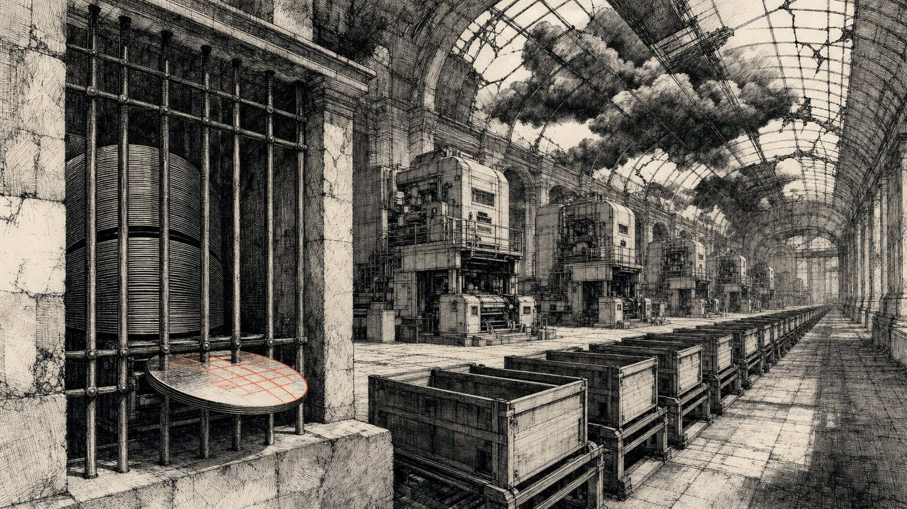
Intel, Sandisk, AWS, Binance. Shake it up. Add some Geopolitics. Why not?
Intel which is now down 29% this morning changed the story from "2027 is funded by operations" to that it's probably funded by debt and equity…
Whiplash. DeepSeek, Inference is Over. SpaceX $1T Guide (We're Back)
Simply - near term after SpaceX and SMCI we see a sigh of relief on GPU economics and then are left with the Fable 5.5 launch to answer the question…

Is CoreWeave Going to Die
No. Coreweave I do not think is going to die. I think Anthropic roadshow will do better than expects due to Fable 5.5 lifting sentiment on Lab…